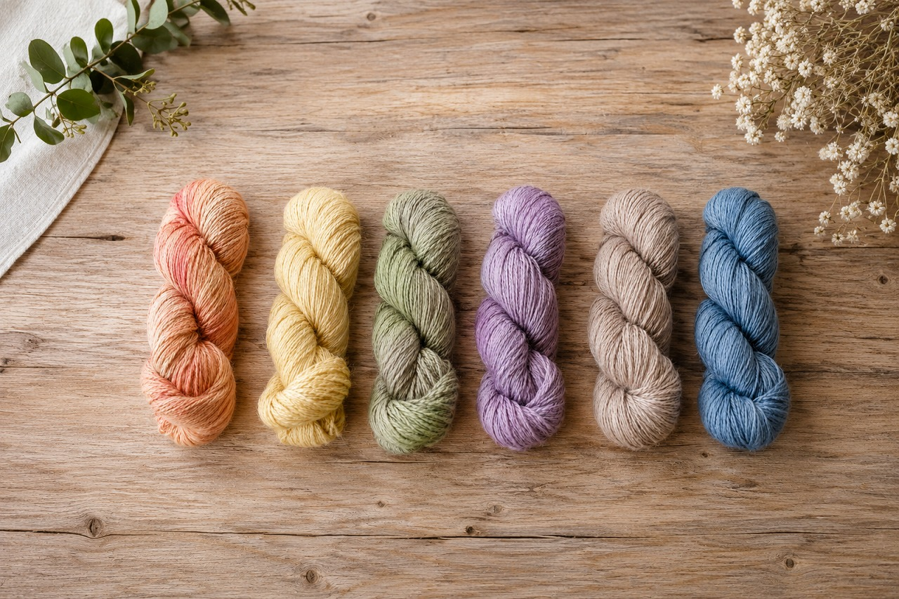
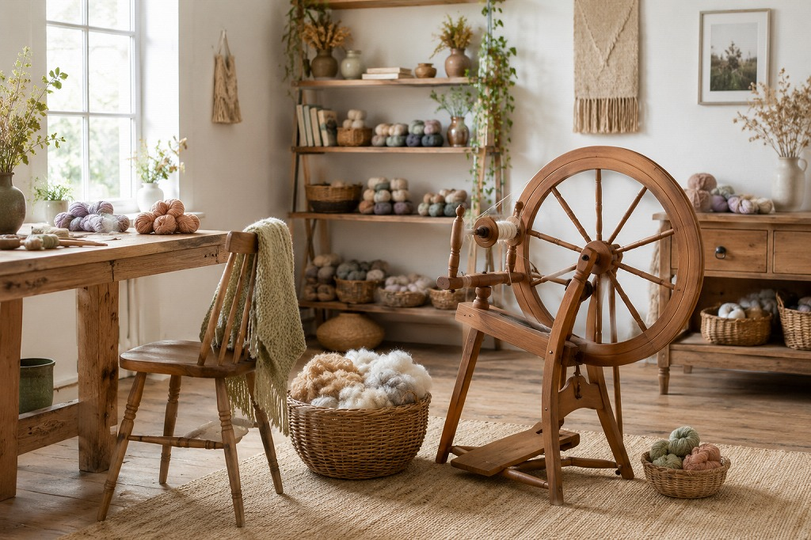

手染め・手紡ぎ糸
夜の藍 / Merino Wool
¥ 2,800 / 約100g

K&ito. — 手染め・手紡ぎ糸の工房

About K&ito.
K&ito.は、手染め・手紡ぎ糸を扱う小さな工房です。店主が一本一本丁寧に染め、紡いだ糸は、どれも世界にひとつだけのもの。原毛や道具も取り揃え、糸づくりを楽しみたい方のご来店をお待ちしています。
店主について →In stock
手染め・手紡ぎ糸
¥ 2,800 / 約100g

手染め・手紡ぎ糸
¥ 3,200 / 約80g

手染め・手紡ぎ糸
¥ 2,600 / 約100g
※ すべて一点もの・実店舗販売のみ。在庫状況はInstagramにてご確認ください。
Workshop

草木や天然染料を使って、自分だけの色に糸を染めるワークショップ。初めての方も安心してご参加いただけます。

スピンドルを使って羊毛を糸に紡ぐ体験。糸ができていく感覚は、一度体験するとやみつきになります。
次回の開催日・お申し込みは About ページへ
開催スケジュールをみる →